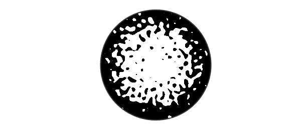
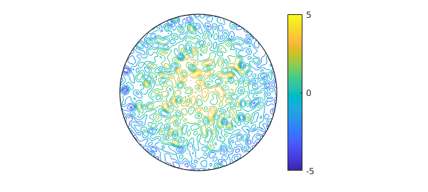
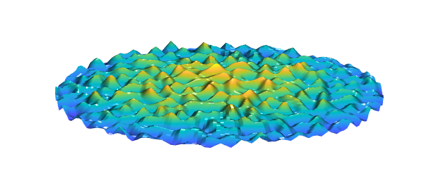

Here is a smooth random function on the unit disk,
rng(1), random = randnfundisk(0.1);
and here is a paraboloid on the same domain,
paraboloid = diskfun(@(theta,r) 2-4*r.^2,'polar');
If we plot the sum of the two in zebra mode, we get an interesting picture:
f = random + paraboloid; plot(f,'zebra'), axis equal off

Of course zebra mode isn't the only way to plot a function. Here is a contour plot:
contour(f), colorbar, colormap('default'), axis off

And here is a surface plot:
surf(f), zlim([-10 10]) camlight, camlight view(0,60), axis off

The smooth random functions produced by randnfundisk are defined by finite Fourier series with random coefficients; see [7]. As discussed in Section 7 of that paper, random surfaces have been studied since Longuet-Higgins in 1957 [8], and application areas include oceanography [8], biology [10], cosmology [2,6,9], condensed matter physics [5], and the melting of the Arctic [4]. There is also interest among pure mathematicians [1] and other theoretical physicists [3]. Chebfun's smooth random functions are examples of Gaussian random fields [9].
Our choice in this example to show random functions on a disk is arbitrary. Good times can also be had with randnfun, randnfun2, and randnfunsphere.
[1] R. J. Adler and J. E. Taylor, Random Fields and Geometry, Springer, 2009.
[2] J. M. Bardeen, J. R. Bond, N. Kaiser, and A. S. Szalay, The statistics of peaks of Gaussian random fields, Astrophys. J. 304 (1986), 15--61.
[3] E. Bogomolny and C. Schmit, Random wavefunctions and percolation, J. Phys. A 40 (2007), 14033--14043.
[4] B. Bowen, C. Strong, and K. M. Golden, Modeling the fractal geometry of Arctic melt pounds using the level sets of random surface, J. Fractal Geom. 5 (2018), 121--142.
[5] A. J. Bray and D. S. Dean, Statistics of critical points of Gaussian fields on large-dimensional spaces, Phys. Rev. Lett. 98 (2007), art. 150201.
[6] R. Easther, A. H. Guth, and A. Masoumi, Counting vacua in random landscapes, arXiv:1612.05224 (2016).
[7] S. Filip, A. Javeed, and L. N. Trefethen, Smooth random functions, random ODEs, and Gaussian processes, SIAM Rev. 61 (2019), 185--205.
[8] M. S. Longuet-Higgins, The statistical analysis of a random, moving surface, Phil. Trans. Roy. Soc. Lond. A 429 (1957), 321--387.
[9] J. Peacock, Cosmological Physics, Cambridge, 1999.
[10] A. Swishchuk and J. Wu, Evolution of Biological Systems in Random Media, Springer, 2013.